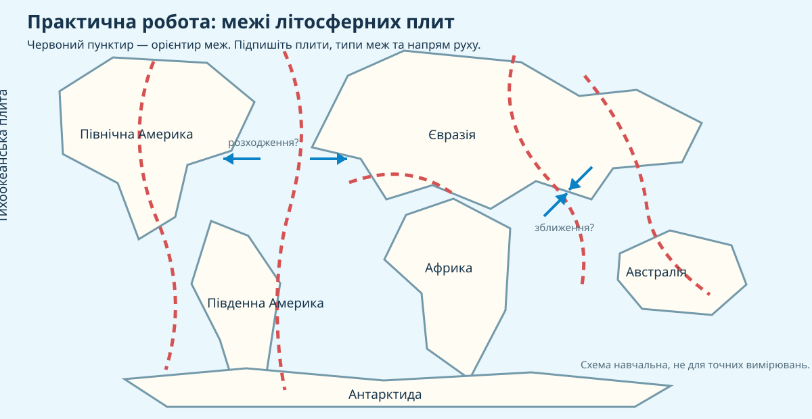

Літосферна плита
Великий або менший жорсткий блок літосфери, який повільно рухається відносно сусідніх блоків.
Чому землетруси, вулкани й океанічні жолоби утворюють на карті не випадковий «шум», а довгі пояси? Спершу знайдемо закономірність у даних — і лише потім сформулюємо теорію.
 NASA/GSFC Scientific Visualization Studio — плити, межі й батиметрія
NASA/GSFC Scientific Visualization Studio — плити, межі й батиметріяВи — команда геологів, яка отримала карту меж плит і спостереження за землетрусами та вулканами. Треба довести, що літосферні плити рухаються, розрізнити три типи їх взаємодії та пояснити наслідки.
Порівняйте карти. Де зосереджені землетруси й вулкани — в середині плит чи поблизу їх меж?


Натисніть тип руху й подивіться, що змінюється на моделі.
Зіставте географічний об’єкт із найімовірнішим типом межі.
Уявімо спрощені GPS-вимірювання двох станцій по різні боки серединно-океанічного хребта.
| Станція | Рух | Швидкість |
|---|---|---|
| Західна | на захід | 2,4 см/рік |
| Східна | на схід | 2,1 см/рік |
Модельні числа для навчального завдання; напрям відповідає розходженню плит.
Доказове завдання. Яке пояснення найкраще узгоджується з даними?
КТП: «Позначення на контурній карті меж літосферних плит».

Оберіть тип межі та матеріал плит — потім перевірте прогноз.
Узагальнюємо те, що вже побачили в картах, моделях і даних.
Великий або менший жорсткий блок літосфери, який повільно рухається відносно сусідніх блоків.
Плити розходяться. У рифтових зонах і серединно-океанічних хребтах може формуватися нова кора.
Плити зближуються. Можливі субдукція, океанічні жолоби, вулканічні дуги або підняття гір.
Плити ковзають одна повз одну. Кора тут переважно не створюється й не знищується, але накопичення напружень спричиняє землетруси.
Під час перегляду складіть триплет: тип межі → напрям руху → наслідок.
Відповідь має містити твердження, конкретний доказ і пояснення зв’язку.
Питання: Чому розподіл землетрусів і вулканів можна вважати доказом взаємодії літосферних плит?
§15. Завершіть практичну роботу: на контурній карті позначте головні літосферні плити та дві межі різних типів. Для кожної межі додайте одне речення «рух → наслідок».
Електронний підручник / ВШО →Введіть ім’я, прізвище та клас. Після цього відкриються 10 питань по 1 балу.
NASA/GSFC Scientific Visualization Studio — карти плит і меж; U.S. Geological Survey — тектонічні плити, землетруси й механізми меж. Навчальна контурна схема збережена локально в assets.